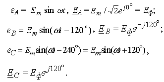

1. СХЕМЫ СОЕДИНЕНИЯ ФАЗ ИСТОЧНИКА И ПРИЕМНИКА
Трехфазная цепь - это совокупность трёхфазной системы ЭДС, трёхфазной нагрузки и соединительных проводов.Трёхфазную систему ЭДС (напряжений) получают с помощью синхронного трёхфазного генератора, в которых при вращении ротора индуктируются три синусоидальные ЭДС одной и той же частоты, равные по амплитуде и сдвинутые по фазе относительно друг друга на угол 120°:


Обмотки статора генератора соединяют по схеме звезда (рис. 11.1, а, слева) или треугольник (рис. 11.1, б, слева). Фазы трёхфазного приёмника (нагрузки) также соединяют по схеме звезда или треугольник (рис. 11.1, а и б, справа).